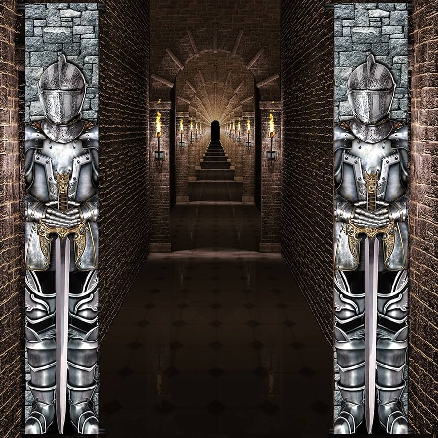

About the Order
The Sovereign Order is presented as a knightly company founded on discipline, loyalty, and service to the realm. Beneath its banner stand those who take up steel not for glory alone, but for duty, protection, and sworn purpose.
This page explains both the identity of the Order and the purpose of the website itself, combining fantasy worldbuilding with the requirements of a multi-page web development project.
The Origin of the Banner

The heraldry of the Sovereign Order reflects vigilance, resolve, and readiness. Its imagery suggests a company forged through trial, bound by oath, and prepared to answer danger wherever it rises.
The banner design helps give the site a strong visual identity and creates a consistent look and feel across every page.
The Purpose of This Website
While the site is fantasy-themed, it was built to demonstrate practical web development skills. The project uses HTML for structure, CSS for styling, and JavaScript for interaction and form processing.
It also applies important design principles such as semantic structure, accessibility features, responsive layout, consistent navigation, and search engine optimization.
Values of the Sovereign Order
- Duty
- The Order exists to answer need with discipline and action.
- Honor
- Every oath, contract, and charge is carried out with integrity.
- Readiness
- The Order remains prepared for defense, travel, and hardship.
- Stewardship
- Knowledge, records, and resources are kept with care for those who follow.
Design Goals of the Site
- Create a clear and consistent fantasy-themed identity
- Maintain easy navigation across all pages
- Use accessible features like alt text, labels, and skip navigation
- Support mobile viewing with a flexible layout
- Present content in an engaging and organized way